class: center, middle <br/><br/> .title[Oceanografía Dinámica I] .subtitle[Clase 01 - Introducción] <br/><br/> .author[Cuatrimestre 2025-I] .institution[DOF-CICESE] <br/> <br/> .date[8 de enero de 2025] <br/><br/> <img style="width:100%" src="./figures/green_waves.png"> <!-- .note[Created with [{Liminal}](https://github.com/jonathanlilly/liminal) using [{Remark.js}](http://remarkjs.com/) + [{Markdown}](https://github.com/adam-p/markdown-here/wiki/Markdown-Cheatsheet) + [{KaTeX}](https://katex.org)] --> --- name: toc class: left <img style="width:50%" src="./figures/ink.jpg"> #Contenido 1. [De lxs profesorxs](#profes) 1. [Revisión del temario](#temario) 1. [Código de conducta](#codigo) 1. [Introducción a los fluidos geofísicos](#fluidosgeofisicos) <!-- Comment out the next slide if you don't want the Table of Contents link --> --- layout: true .toc[[✧](#toc)] --- name: profes class: left # De lxs profesorxs Profesora: [Karina Ramos Musalem](https://anakarinarm.github.io/) **Contacto**: kramosmu@cicese.mx Profesor: Manuel López **Contacto**: malope@cicese.mx Ayudante: Eduardo Ashida ** Contacto**: ashida@cicese.edu.mx --- # Horario **Clases** - Lunes 10-12 - Miércoles 9:15-11:15 - Viernes 13:30-14:50 Dudas por correo, en el cubículo o en Classroom para que todes participemos :-) --- name: temario class:left # Temario del curso Pueden consultar el temario en classroom. * Folder "Bibliografía" en Classroom * Les iremos indicando las referencias principales de cada tema a lo largo del curso. --- class: left # Evaluación |Rubro|Porcentaje| |::|:-:| |Tareas|40%| |Parciales|40%| |Exposición de artículo|20%| </br> **Tareas**: Habrá aproximadamente 7 en el semestre (~ 1 cada 2 semanas). Se entregan individualmente. </br> **Parciales:** Habrá al menos dos exámenes parciales. El *twist* es que 80% de su calificación será del examen individual y 20% del examen en equipo (al menos en mi examen). </br> **Exposición de un artículo:** - Más detalles pronto </br> **Guias de estudio**: Son para ustedes. Identificar los conceptos más importantes que deben entender cada semana. --- name: conducta class: Código de conducta Decidamos entre todes las reglas de convivencia del curso (pizarrón). --- name: intro class: center, middle # ¿De qué hablamos cuando hablamos de fluidos geofísicos? --- class: center ## ¿De qué hablamos cuando hablamos de fluidos geofísicos? <img style="width:100%" src="./figures/Nora_Ida_NOAAsatellites.jpg"> Huracanes Nora (izq.) e Ida (der.) Fuente: NOAA Satellites --- name: fg class: left # Características de los fluidos geofísicos (FG) </br></br> * Se encuentran en un sistema de referencia en **rotación**; </br></br> * por lo regular están **estratificados** y son **turbulentos**; </br></br> * En la naturaleza ocurren a "gran escala" (en un momento definiremos "gran"). Este curso tratará de las peculiaridades que aparecen en la dinámica del flujo debidas a la influencia de una, otra o ambas características. --- class: center ## Otros ejemplos 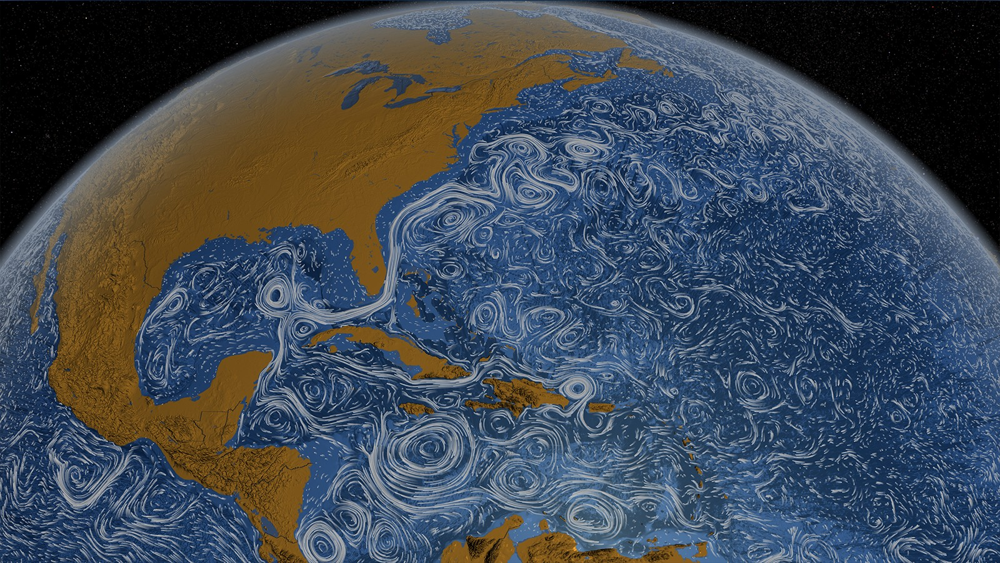 .caption[Fuente: NOAA [Atlantic Oceanographic and Meteorological Laboratory](https://www.aoml.noaa.gov/news/anticyclonic-eddies-off-cuban-coast/)] Estructuras de mesoescala (ciclones, tiempo oceánico) y submesoescala (remolinos, frentes, surgencias, etc). --- class: center 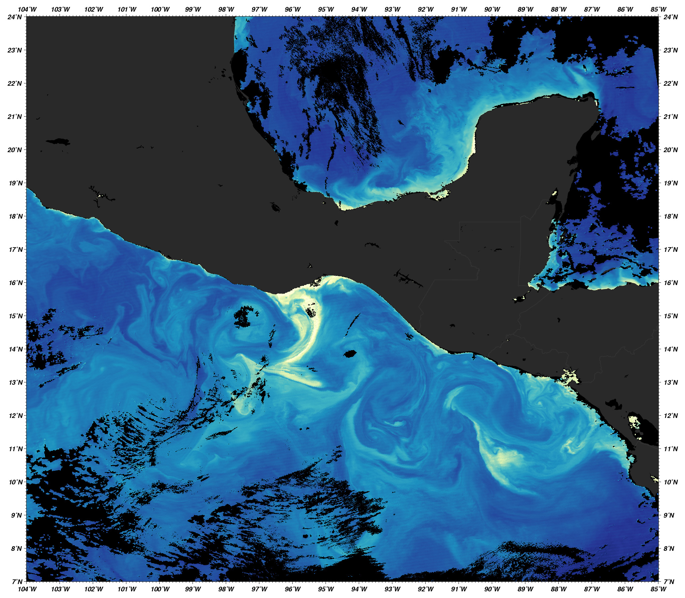 .caption[Fuente: NASA Identifier: ge_05147. Clorofila en el Golfo de Tehuantepec en enero 4 del 2005, tomada por el Moderate Resolution Imaging Spectroradiometer (MODIS) en el satélite Aqua de NASA.] La productividad biológica está muy relacionada a la DFG. --- class: center 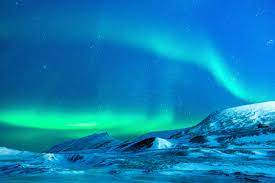 </br> También lidia con el "estado del tiempo espacial" y "vientos violentos". --- class: center 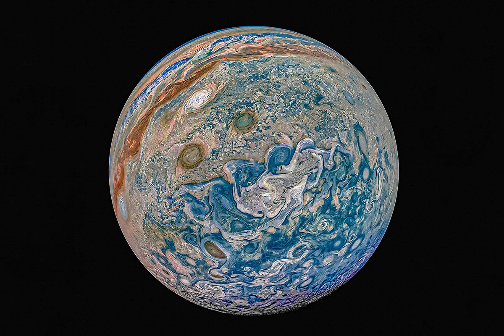 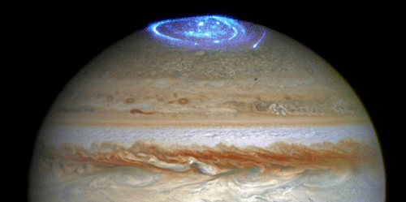 .caption[Arriba: Júpiter. Juno Mission, Nasa. Abajo: Jovian aurora. NASA, ESA and J Nichols/University of Leicester.] </br> Aplica a otros planetas, claro. --- class: left ## Efecto de la estratificación .left-column[</br></br></br></br></br>La **estratificación** es la variación vertical de la densidad.] .right-column[<img style="width:100%" src="./figures/latte.jpg">] --- class: left count: false ## Efecto de la estratificación .left-column[Muevo elemento de fluido en equilibrio de $Z$ hasta $Z+h$ $\rightarrow$ **fuerza boyante** La frecuencia de oscilación$^1$.footnote[$1.$ Conocida como frecuencia de Brunt-Väisälä] del elemento de fluido está dada por: $$N^2=\frac{g}{\rho_0}\frac{\partial{\rho}}{\partial z}$$ $\uparrow N^2$ inhibe movimientos verticales y da estructura vertical al flujo.] .right-column[<img style="width:100%" src="./figures/latte_annotated.jpg">] --- class: left ## Efecto de la rotación .left-column[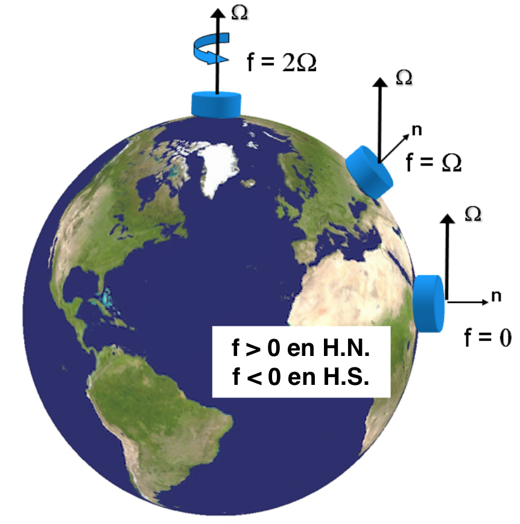 $\Omega=7.2921\times10^{-5}$ rad s$^{-1}$ Agrega el término $2\vec{\Omega} \times \vec{u}$ a las ecuaciones de momento. ] .right-column[Flujos tienden a desviarse a la **derecha** en el **hemisferio norte** y a la izquierda en el hemisferio sur. **Parámetro de Coriolis** </br> $$f=2\Omega\sin{\varphi},$$ donde $\varphi$ es la latitud. Por ejemplo: En Huatulco ($\varphi=17.09^{\circ}$ N), $f=4.28\times10^{-5}$ s$^{-1}$ En Ensenada ($\varphi=30.90^{\circ}$ N), $f=7.47\times10^{-5}$ s$^{-1}$] --- class: left ## Efecto de la rotación </br> Para que el flujo sienta el efecto de la rotación, las escalas temporales deben ser del orden de un periodo de rotación. $$ \epsilon = \frac{\textrm{tiempo de una revolución}}{\textrm{tiempo en avanzar } L \textrm{ a velocidad } U} $$ $$= \frac{\frac{2\pi}{\Omega}}{\frac{L}{U}} = \frac{2\pi U}{\Omega L}.$$ Si **$\epsilon \le 1$, la rotación es importante**. Esto limita el tamaño y velocidad del flujo y nos da una definición de "gran escala". Nombre especial de $\epsilon$: *Número de Rossby* en forma $Ro=U/fL$. --- class: left ## Similaridad dinámica ¿Por qué podemos estudiar la atmósfera, el océano y un tanque con las mismas ecuaciones? $$\frac{\partial\vec{u}}{\partial t}+ \vec{u}\cdot\nabla\vec{u} + \vec{f}\times\vec{u} = \frac{1}{\rho} \nabla P - \vec{g} + \mu \nabla^2\vec{u}$$ Ej. Para que la rotación importe, $Ro=U/fL<1$: **Tierra** $f$ ~ $10^{-4}$ s$^{-1}$ *Océano*: $L\sim10^3$ km, $U\sim10$ cm s$^{-1}$, $Ro\sim10^{-2}$ *Atmósfera*: $L\sim10^4$ km, $U\sim10$ ms$^{-1}$, $Ro\sim10^{-3}$ **Plataforma giratoria** $f$ ~ $10^{-1}$ s$^{-1}$ *Laboratorio*: $L\sim1$ m, $U\sim10^{-2}$ cm s$^{-1}$, $Ro\sim10^{-1}$ --- class: left count: false ## Similaridad dinámica Para que dos flujos sean **físicamente equivalentes** o análogos deben tener **similaridad dinámica** (cinemática y geométrica). **Similaridad dinámica**: La importancia relativa entre distintos tipos de fuerza (e.g., inerciales, viscosas, etc.) debe ser la misma para ambos flujos. .center[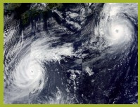 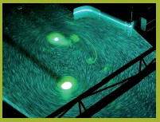 .caption[Interacción de remolinos cerca de Japón y remolinos en el laboratorio - LEGI Plataforma Coriolis (J.B. Flor, 2005). Imágenes tomadas de http://www.legi.grenoble-inp.fr/web/spip.php?article757].] --- class: left </br></br> Habrá **similaridad dinámica** si los **grupos adimensionales** de ambos flujos son **iguales**. </br> Algunos ejemplos de números adimensionales relevantes: |||||| |::||:-:||:-:| |**Rossby**||rotación vs. advección|| $Ro=\frac{U}{fL}$| |**Burger**||rotación vs. estratificación|| $Bu=\frac{NH}{fL}$| |**Reynolds**||inerciales vs. fricción|| $Re=\frac{UL}{\nu\_E}$| .center[ .caption[Vórtices de von Kárman sobre la isla de Selkirk y experimento análogo de A. Stegner (2005). Imágenes tomadas de http://www.legi.grenoble-inp.fr].] --- class: left ## La DFG se puede estudiar en un laboratorio .left-column[**Rotación**: Plataforma o mesa giratoria </br></br> **Estratificación**: Distintas concentraciones de sal o gradientes de temperatura </br></br> **Medio**: Usamos agua en vez de aire para modelar tanto océano como atmósfera (nunca he visto un túnel de viento giratorio, pero ¿tal vez sí hay?). </br></br> .caption[Mesa giratoria del Laboratorio de Fluidos Geofísicos, UBC] ] .right-column[<img style="width:92%" src="./figures/TanknTable.JPG"> ] --- class: left ## La DFG se puede estudiar con simulaciones numéricas En general discretizamos el dominio de interés y las ecuaciones de movimiento y termodinámica usando diferencias finitas, volumen finito. <video preload="auto" width="100%" height="auto" data-setup="{}" autoplay loop controls> <source src="./videos/w_Bay-NoBay_febTS.mp4" type="video/mp4" /></video> --- class: left La **DFG** se trata de **representar matemáticamente** e **interpretar físicamente** el movimiento de flujos geofísicos. Las matemáticas de la DFG son muy "computacionales" (Ej. modelación numérica de la circulación oceánica y las nubes son los problemas computacionales más grandes en la historia de la ciencia) Esto se debe a que los experimentos de laboratorio solo pueden responder algunas de las preguntas interesantes. En geofísica muchos de los avances teóricos están basados en DFG y no en experimentos porque obtener mediciones en campo es complicado, caro y muchas veces imposible. --- class: left ## ¿Por qué estudiar dinámica del oceáno? 🌏 Los océanos son el motor del clima y los sistemas meteorológicos de la Tierra. </br></br> Entender la dinámica oceánica ayuda a: - Predecir corrientes y ondas en el océano. - Gestionar pesquerías y ecosistemas. - Mitigar los impactos del cambio climático. --- ## Geostrofía: El Balance de Fuerzas 🌐 ### Concepto - Balance entre la **fuerza de Coriolis** y el **gradiente de presión**. - Genera corrientes a gran escala. - Giros ciclónicos o anticiclónicos, diámetro típicamente entre 50–200 km, importantes en el transporte de calor y nutrientes. ### Ejemplo de la Vida Real - **Remolinos de la Corriente del Lazo** --- 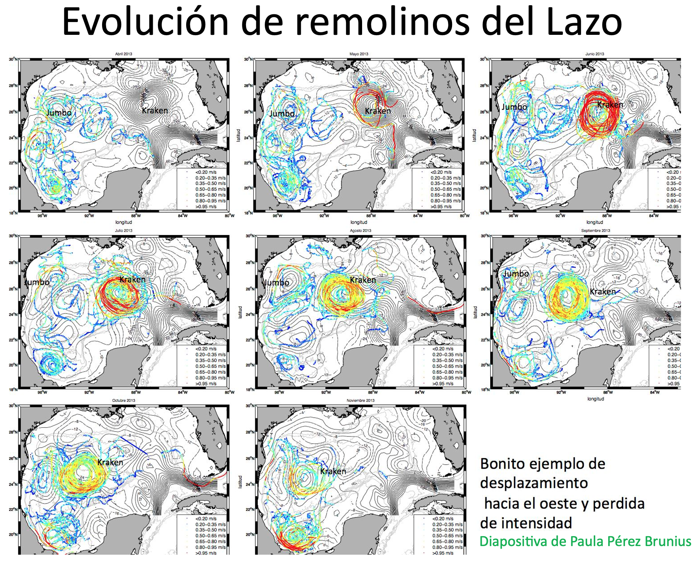 --- ## Oscilaciones Inerciales ### Concepto - Movimientos circulares de partículas de agua debido a la fuerza de Coriolis, sin fuerzas restauradoras. ### Ejemplo de la Vida Real .left-column[ - **Respuesta a Ciclones en el Golfo de México**: -Tras eventos como huracanes la capa superficial oscila en sentido de las manecillas del reloj. - Esta energía puede progagarse al interior en el borde de remolinos o en la corriente del Lazo.] .right-column[ 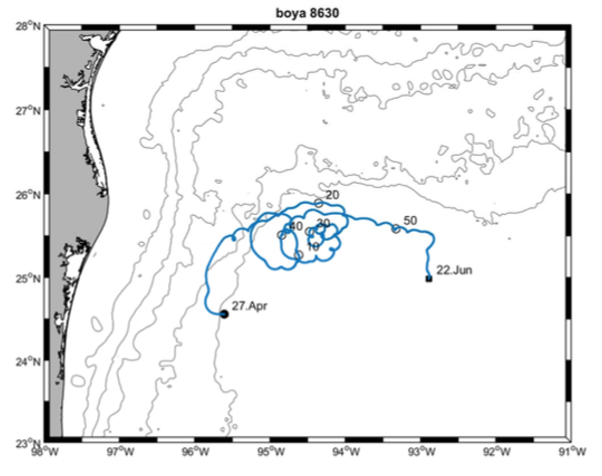] --- 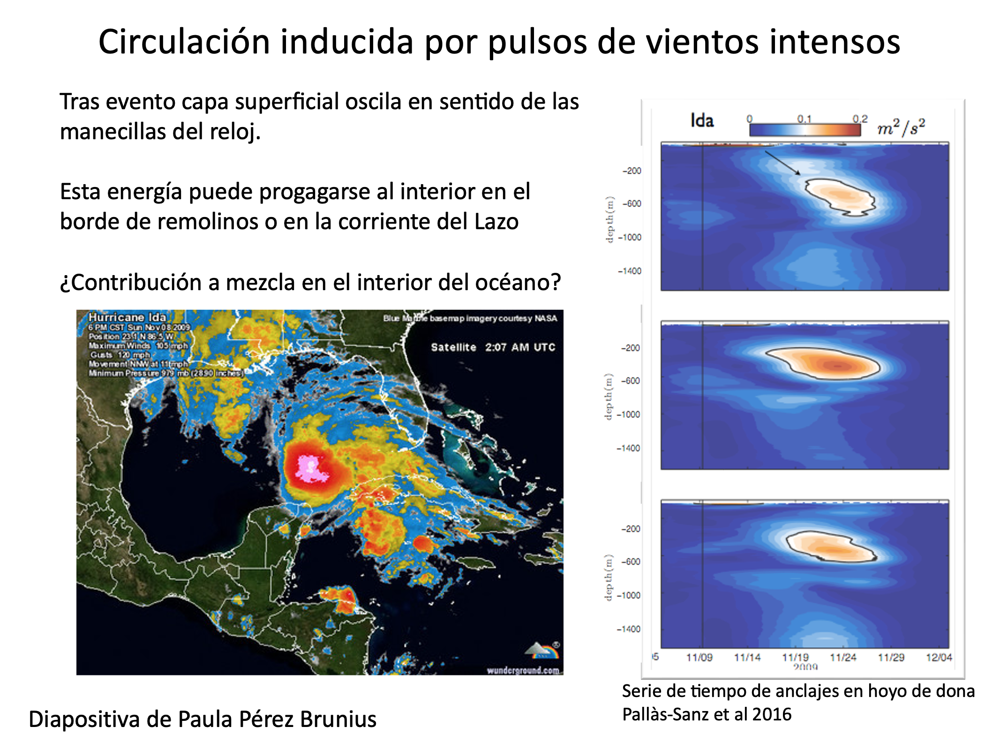 --- ## Ondas de Kelvin: Mensajeras Costeras 📡 ### Concepto - Ondas no dispersivas atrapadas a la costa o al ecuador debido a la rotación de la Tierra. ### Ejemplo de la Vida Real - **El Niño y el Pacífico Mexicano**: - Las ondas de Kelvin suprimen la termoclina propiciando la aparición de aguas anómalamente cálidas en las costas del Pacífico durante eventos de El Niño, afectando la pesca y provocando lluvias intensas en México. --- 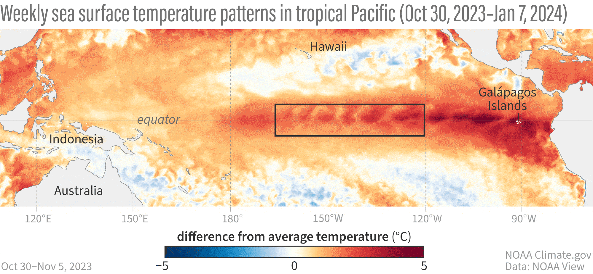 <img style="width:80%" src="./figures/El_Nino_2023_animation.gif"> .caption[Animaciones de NOAA climate y [NASA JPL](https://sealevel.jpl.nasa.gov/data/el-nino-la-nina-watch-and-pdo/el-nino-2023/)] --- ## Ondas Internas 🌊 ### Concepto - Ondas que se propagan dentro del océano debidas a los cambios de densidad en el océano. ### Ejemplo de la Vida Real - **Ondas Internas en el Golfo de California**: - Generadas por la interacción de las mareas con la topografía submarina, contribuyen al transporte de nutrientes hacia la superficie y sostienen pesquerías como la sardina y el camarón. --- Animación de MIT ondas internas en el estrecho de Luzón (mar del Sur de China) <iframe width=442 height="250" src="https://www.youtube-nocookie.com/embed/WYmRnSRsS7Y?si=DCwffbYB9Np08Izl" title="YouTube video player" frameborder="0" allow="accelerometer; autoplay; clipboard-write; encrypted-media; gyroscope; picture-in-picture; web-share" referrerpolicy="strict-origin-when-cross-origin" allowfullscreen></iframe> Experimento en la Universidad de Washington: <iframe width="442" height="250" src="https://www.youtube-nocookie.com/embed/BDQD_gM3M24?si=5Hh66mg7FJ9A0FAs&start=84" title="YouTube video player" frameborder="0" allow="accelerometer; autoplay; clipboard-write; encrypted-media; gyroscope; picture-in-picture; web-share" referrerpolicy="strict-origin-when-cross-origin" allowfullscreen></iframe> --- ## Consecuencias sociales de la dinámica oceánica La dinámica del oceáno es central para resolver los desafíos globales actuales. **Corrientes Geostróficas**: Redistribuyen el calor entre el ecuador y los polos. **Impacto Social**: - Estabilizan las temperaturas globales. - Influyen en climas regionales, por ejemplo, los inviernos suaves en Europa debido a la Corriente del Golfo. **Oscilaciones Inerciales**: Ofrecen información sobre la redistribución de energía tras huracanes. **Impacto Social**: - Predicción de erosión costera y daños en infraestructura. - Apoyo en la recuperación post-desastre. --- **Ondas Internas**: Potencial de llevar nutrientes desde las capas profundas a la superficie. - Sostienen pesquerías y ecosistemas marinos. **Remolinos de Mesoscala**: Pueden influir en la mezcla vertical - Secuestro de carbono. - Redistribución de calor y nutrientes. **Dinámica Oceánica en Modelos Climáticos**: - Simular con precisión intercambios de calor, el aumento del nivel del mar y los retroalimentación climática. - Orientar políticas climáticas internacionales (e.g., Acuerdo de París). --- ## Discusión: Sus Perspectivas 🌟 1. ¿Cómo puede el entendimiento de la dinámica oceánica ayudar a nuestra comunidad localmente? 2. ¿Qué tema te emociona más? ¿Por qué? --- class: left # Referencias Cushman-Roisin y Beckers - Capítulos 1 y 11.